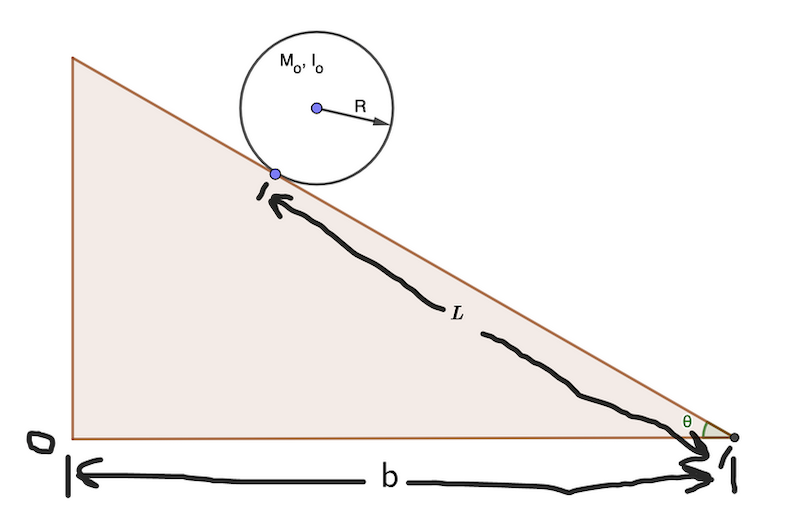

Table of Contents

1 Coefficient of Fiction
When given this scheme, we can understand that friction can be modeled by some:
\begin{equation} F_f \leq \mu_s N \end{equation}We will define a system via the picture exactly: up is \(+y\), down is \(-y\), right is \(+x\), and left is \(-x\). Let's first calculate the component of gravity perpendicular to the ramp—the only force causing the existence of a normal force.
We understand that force due to gravity on the object is:
\begin{equation} F_g = -gM_0 \end{equation}The component perpendicular to the ramp, then, would be:
\begin{equation} N=-F_g\ cos\theta \end{equation}Therefore, we can create an expression solving for the coefficient of friction:
\begin{align} &F_f \leq \mu_s N \\ \Rightarrow\ & F_f \leq -\mu_s F_g\ cos\theta \\ \Rightarrow\ & F_f \leq \mu_s gM_0\ cos\theta \\ \Rightarrow\ & \mu_s \geq \frac{F_f}{gM_0\ cos\theta} \end{align}Supplying the actual numerical values into the expressions, we get that:
\begin{equation} \mu_s \geq\ \sim 0.236 \end{equation}2 Linear Acceleration
\To figure the linear acceleration upon the system, we will need to create a summation of all forces. Fortunately, we realize that—due to the properties of the normal force—all components of the contact force perpendicular to the ramp cancel out.
Therefore, we simply have to figure the sum of all forces in the direction parallel to the ramp.
As the direction of motion is towards the \(+x\) direction (rel. to ramp), we can see that the force of friction would therefore be applied towards the \(-x\) direction.
Therefore:
\begin{equation} F_{net_{rx}} = F_g_x - F_f \end{equation}The component of gravity parallel to the ramp would be:
\begin{align} F_{gx} &= -F_g \sin\theta \\ &=gM_0 \sin\theta \end{align}Taking these components together, then, we have that:
\begin{equation} F_{net_{rx}} = gM_0 \sin\theta - F_f \end{equation}Taking Newton's Second Law:
\begin{align} &M_0 a_{rx} = gM_0 \sin\theta - F_f \\ \Rightarrow&\ a_{rx} = \frac{gM_0 \sin\theta - F_f}{M_0} \end{align}Supplying the actual numerical values, we get that:
\begin{equation} a_{rx} = 2.9\ \frac{m}{s^2} \end{equation}The object, therefore, slides and rolls down the ramp at a linear acceleration of 2.9 metres a second squared.
3 Angular Acceleration
We want to figure out the angular acceleration of the cylinder rotating around its center of mass. Namely, we want to find the rotational acceleration of the object rotating around the center of mass.
To figure the angular acceleration we see that, based on what previously was derived:
\begin{equation} \vec{\tau}'_{net} = I_{CM} \vec{\alpha}' \end{equation}We will therefore need to figure first the net torque on the system, and divide it by the rotational inertia about the center of mass.
To figure the net torque on the object about the center of mass, we first define a coordinate frame and add all forces.
We will define a system \(z\) such that "out of the page" is \(+z\) and "into the page" is \(-z\). We understand that we are in the reference frame of the object, meaning gravity is coaxial with the center of mass. It therefore plays no part in the angular acceleration around the center of mass.
The only force which is not coaxial to our object is the force of friction; it is exactly perpendicular to the radius (therefore, the angle of the ramp plays no part):
\begin{align} \vec{\tau}'_F_f &= \vec{R} \times \vec{F_f}\\ &= RF_f(-\hat{z}) \end{align}The total \(\vec{\tau}'_{net}\), therefore, is simply the value we indicated above:
\begin{equation} \vec{\tau}'_{net} = - RF_f \end{equation}We understand from before that:
\begin{equation} \vec{\tau}'_{net} = I_{0} \vec{\alpha}' \end{equation}Therefore:
\begin{equation} \vec{\alpha}' = \frac{- RF_f}{I_0} \end{equation}Supplying the actual constants into the expression:
\begin{align} \alpha' &= \frac{RF_f}{I_0}\\ &= 5 \frac{rad}{s^2} \end{align}4 Coefficient of Friction
The question that the coefficient of friction is asking is whether or not the object slides. If it does indeed slide, the acceleration calculated with torque should be higher than that calculated by simply dividing radius out of the acceleration (as \(r\theta\) is the circumference.)
\begin{align} &a = r\alpha \\ \Rightarrow\ &\alpha = \frac{a_{rx}}{R} \end{align}Supplying the numerical values:
\begin{equation} \alpha = 5.8 \frac{rad}{s^2} \end{equation}Under no slipping, therefore, the object has an angular acceleration of 5.8 radians per second squared.
This value is evidently larger than the \(5\) radians per second derived above, meaning that the object does indeed rotate and slip along the ramp. Hence, the coefficient of friction derived above would be a kinetic one.
5 Torque at Rest
At the point indicated, we form another right triangle with hypotenuse \(b\). The lever arm of the rotation of the center of cylinder is, therefore, the sum of \(R\) plus the side length of the triangle facing \(\theta\). Meaning: the lever arm is \(b\sin\theta + R\).
We again note that gravity is coaxial to the object; however, it still plays a part in the net force of the object.
\begin{align} \vec{\tau}_{net} &= (b\ sin\theta+R)(M_0g\sin(\theta) - F_f)-RF_f \end{align}Note here again that we define "right" is \(+x\), and "out of the page" as \(+z\).
6 Derivative of Angular Momentum
We will work in the prime reference frame entirely first.
We understand that:
\begin{equation} \vec{L}' = I_{CM}\vec{\omega}' \end{equation}Furthermore, we see from previous derivations that:
\begin{align} \vec{L}_{sys} &= \vec{R} \times M \vec{v}_{cm} + \vec{L}'\\ &= \vec{R} \times M \vec{v}_{cm} + I_{CM}\vec{\omega}' \end{align}At the point indicated, we form another right triangle with hypotenuse \(b\). The lever arm of the rotation of the center of cylinder is, therefore, the sum of \(R\) plus the side length of the triangle facing \(\theta\). Meaning: \(R = b\sin\theta + R\).
The direction of the center of mass' velocity is down the ramp, forming exactly a \(90^\circ\) angle with the lever arm. Hence, this renders:
\begin{equation} \vec{L}_{sys} = (b\ sin\theta +R) M_0v_{cm} + I_{CM} \omega' \end{equation}Therefore, taking the first derivative, we see that:
\begin{equation} \frac{d\vec{L}'}{dt} = \vec{\tau}'_{net} = (b\ sin\theta +R)M_0 a_{CM} + I_{CM}\alpha' \end{equation}7 Torque and Rest is Equal to Derivative of Angular Momentum
To set up this equality, we will have to make a few substitutions.
First, we understand that:
\begin{equation} \frac{d\vec{L}}{dt} = RM_0 a_{CM} + I_{CM}\alpha' \end{equation}Recall that, given what we derived before, we have that:
\begin{align} &\vec{\tau}'_{net} = I_{CM} \vec{\alpha}'\\ \Rightarrow\ & I_{CM} = \frac{\vec{\tau}'_{net}}{\vec{\alpha}'} \end{align}Setting the variables for our situation, we have:
\begin{equation} I_{CM}a' = \vec{\tau}_{net} = - F_fR \end{equation}From previous derivation, we have that:
\begin{equation} \alpha = \frac{a_{rx}}{R} \end{equation}and that:
\begin{equation} a_{rx} = \frac{gM_0 \sin\theta - F_f}{M_0} \end{equation}Substituting in the previously-derived expression for \(a_{rx}\), we have:
\begin{equation} \alpha = \frac{gM_0 \sin\theta - F_f}{M_0R} \end{equation}Substituting the above-derived expressions here into the expression:
\begin{align} \frac{d\vec{L}}{dt} &= I_{CM}\alpha' + (b\ sin\theta + R)M_0 a_{CM}\\ &= - F_fR + (b\ sin\theta + R)M_0 \frac{gM_0 \sin\theta - F_f}{M_0}\\ &= - F_fR + (b\ sin\theta + R)(gM_0 \sin\theta - F_f)\\ &= (b\ sin\theta + R)(gM_0 \sin\theta - F_f)- F_fR \end{align}Finally, we found that:
\begin{align} (b\ sin\theta + R)(gM_0 \sin\theta - F_f)- F_fR &= (b\ sin\theta + R)(gM_0 \sin\theta - F_f)- F_fR\\ \frac{d\vec{L}}{dt} &= \vec{\tau}_{net}\ \blacksquare \end{align}